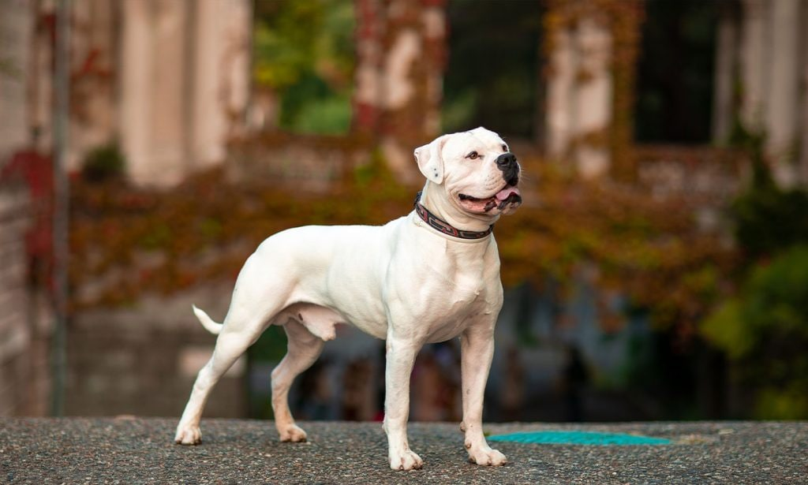
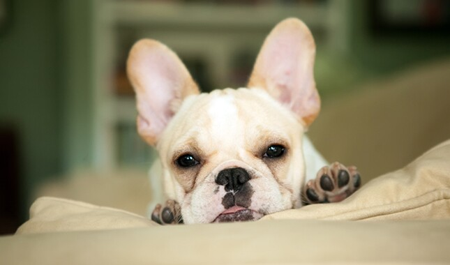
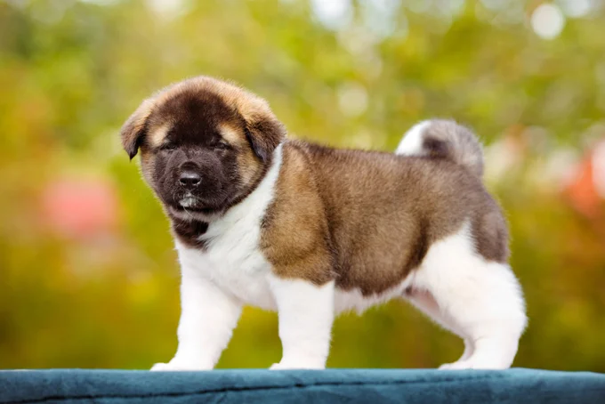

Lets talk about some breeds of dogs
- German Shepard
- Sebrain Husky
- American Bulldog 
- French Bulldog 
- American Akita 

Generally considered dogkind's finest all-purpose worker, the German Shepherd Dog is a large, agile, muscular dog of noble character and high intelligence. Loyal, confident, courageous, and steady, the German Shepherd is truly a dog lover's delight. German Shepherd Dogs can stand as high as 26 inches at the shoulder and, when viewed in outline, presents a picture of smooth, graceful curves rather than angles. The natural gait is a free-and-easy trot, but they can turn it up a notch or two and reach great speeds. There are many reasons why German Shepherds stand in the front rank of canine royalty, but experts say their defining attribute is character: loyalty, courage, confidence, the ability to learn commands for many tasks, and the willingness to put their life on the line in defense of loved ones. German Shepherds will be gentle family pets and steadfast guardians, but, the breed standard says, there's a 'certain aloofness that does not lend itself to immediate and indiscriminate friendships.'

Siberian Husky, a thickly coated, compact sled dog of medium size and great endurance, was developed to work in packs, pulling light loads at moderate speeds over vast frozen expanses. Sibes are friendly, fastidious, and dignified. The graceful, medium-sized Siberian Husky's almond-shaped eyes can be either brown or blue'¿and sometimes one of each'¿and convey a keen but amiable and even mischievous expression. Quick and nimble-footed, Siberians are known for their powerful but seemingly effortless gait. Tipping the scales at no more than 60 pounds, they are noticeably smaller and lighter than their burly cousin, the Alaskan Malamute. As born pack dogs, they enjoy family life and get on well with other dogs. The Sibe's innate friendliness render them indifferent watchdogs. These are energetic dogs who can't resist chasing small animals, so secure running room is a must. An attractive feature of the breed: Sibes are naturally clean, with little doggy odor.
American Bulldogs are a well-balanced athletic dog that demonstrate great strength, endurance, agility, and a friendly attitude. Historically, they were bred to be a utility dog used for working the farm. The American Bulldog is a descendant of the English Bulldog. It is believed that the bulldog was in America as early as the 17th century. They came to the United States in the 1800s, with immigrants who brought their working bulldogs with them. Small farmers and ranchers used this all-around working dog for many tasks including farm guardians, stock dogs, and catch dogs. The breed largely survived, particularly in the southern states, due to its ability to bring down and catch feral pigs. The breed we know as the American Bulldog was originally known by many different names before the name American Bulldog became the standard. In different parts of the South he was known as the White English Southern Bulldog, but most commonly just "bulldog." The breed was not called a bulldog because of a certain look, but because they did real bulldog work.
The one-of-a-kind French Bulldog, with his large bat ears and even disposition, is one of the world's most popular small-dog breeds, especially among city dwellers. The Frenchie is playful, alert, adaptable, and completely irresistible. The French Bulldog resembles a Bulldog in miniature, except for the large, erect 'bat ears' that are the breed's trademark feature. The head is large and square, with heavy wrinkles rolled above the extremely short nose. The body beneath the smooth, brilliant coat is compact and muscular. The bright, affectionate Frenchie is a charmer. Dogs of few words, Frenchies don't bark much'¿but their alertness makes them excellent watchdogs. They happily adapt to life with singles, couples, or families, and do not require a lot of outdoor exercise. They get on well with other animals and enjoy making new friends of the human variety. It is no wonder that city folk from Paris to Peoria swear by this vastly amusing and companionable breed.
Akita is muscular, double-coated dogs of ancient Japanese lineage famous for her dignity, courage, and loyalty. In her native land, she's venerated as family protectors and symbols of good health, happiness, and long life. Akitas are burly, heavy-boned spitz-type dogs of imposing stature. Standing 24 to 28 inches at the shoulder, Akitas have a dense coat that comes in several colors, including white. The head is broad and massive, and is balanced in the rear by a full, curled-over tail. The erect ears and dark, shining eyes contribute to an expression of alertness, a hallmark of the breed. Akitas are quiet, fastidious dogs. Wary of strangers and often intolerant of other animals, Akitas will gladly share their silly, affectionate side with family and friends. They thrive on human companionship. The large, independent-thinking Akita is hardwired for protecting those they love. They must be well socialized from birth with people and other dogs.